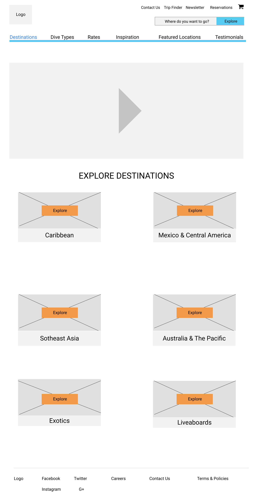
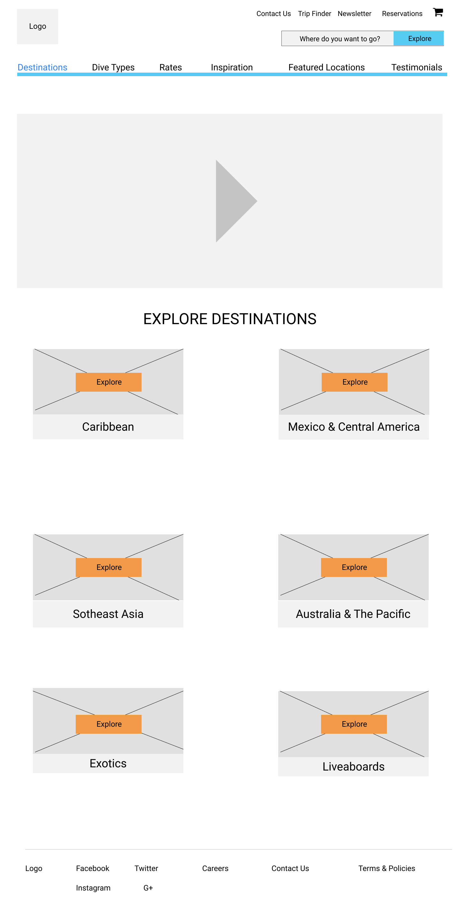

Scuba Adventures is an ecommerce site designed
for divers of
all experience levels to find and book their next dive.

Unless you know where you want to dive or are staying at a diving resort there
aren't
many options for booking and researching dive locations efficiently.
Scuba Adventures, an ecommerce site that offers exceptional diving and liveaboard
rates worldwide. They offer expert information on the dive sites, country
requirements and general information.
The rates are comparable to each specific location so the consumer doesn't need to worry about overpaying on diving rates.
I created 2 Google surveys to gain insight on how many times a year people dive, where they go, how long their trips are, if they rent or own their dive equipment, and how many people they normally dive with.
Scuba Diving is a great way to explore the world we live in, with so many locations and
diving types available it would take several lifetimes to see it all. Today's technology
allows you to book your next excursion in minutes and explore your dive site within hours.
Based on the survey results, we took a deeper look into 3 Scuba Diving Companies to see
what they offered, who their target market is, how they are similar to each other and what
made them different in the diving market. Listing out their strengths and weaknesses will
help see if our site can stand out against the competition. Let's dive in!


As a user, I want to be able to search
by location, skill level, cost, or dive type
to help speed up my search time.
As a user, I want to be able to chat with
a live person who is knowledgeable about the
locations and able to answer my questions.
As a user, I want to purchase multi-day
dive packages so I can save time and money
on my next dive trip.
As a user, I want to see photos of the dive
locations and accommodations so I know what is
included in the cost.
As a user, I want to sign up for newsletters
so I can receive information on sales and new
dive locations available.
As the owner, I want the shopping experience
to be exciting, easy, and hassle free by
creating a site that is simple to navigate
As the owner, I want to know what items
visitors are viewing so I can have the chat
feature available for questions/concerns.
As the owner, I want to offer multi-dive packages
which will save customers money and allow them to
dive more on their trip
As the owner, I want to create a community
where divers can share their photos and
experiences on dives They booked through us.
As the owner, I want to offer a newsletter
and a rewards program allowing my customers
to save money when they refer a friend to the site.
I am looking for a dive trip that will allow
me to learn new skills & meet new divers.
Goals
Would like to learn new diving skills and make new friends
Looking for International diving vacations
Wants to know exactly what is included in the trip & how to prepare
Nice to meet divers from around the world
Frustrations
Slow response to questions
Dive details are not listed or incomplete
Photos are blurry & reviews are vague
I want to make sure my family vacations
are memorable and fun.
Goals
Searching for family friendly dive sites in the Grand Cayman Islands
Multi-level experiences & dive packages are ideal since she is traveling
with two other families
Interested in learning about liveaboard diving
Frustrations
Group rates & discounts aren't listed,communication by email is slow
& time consuming
Looking to stay within a certain price range, would like to have a
compare feature
Would like some sort of an experience "dive guarantee"
Would like to "hold" reservations to confirm with other families,
only option is to "book" then cancel which usually has fees associated with it
I am searching for Spring Break Scuba
diving deals.
Goals
Searching for an inexpensive diving vacation
Would like to book all accommodations at once
Needs to leave on a Thursday and return on Monday
Has specific types of diving he is looking for
Frustrations
light times don't work with dive times
Price comparison is hard to do
Add-on fees and high costs delay booking
The user flows I created were based on the survey results. I created five user flows
showing the process for each of the requests.
.jpg)
.jpg)
.jpg)
.jpg)
.jpg)
I created the basic screens needed for my user tests to see if my process made
sense before moving to the secondary pages.

 

.png)
There were three users testing the Scuba Adventures website, 1 male and 2 female.
The ages ranged from mid-20's to late 40's. All of the users tested on a desktop.
Each tester completed all 3 tasks and the process was approximately 10 minutes long
from start to finish.
How would you book a diving trip?
How would you submit a quote?
Show me where you would go to add a review?
The main usability issue that all 3 users came across was the misunderstanding of what the "Reservation" tab did. When asked how to book a reservation, all 3 of the testers went to the "Reservation" tab at the top of the screen. This wasn't clickable yet because my thought process was to go here to review your purchase. All 3 users were using it as a way to book a new reservation instead of to "check" a reservation that you already have.
A minor, but important concern was brought to my attention when one user wasn't sure if the message they left was received by the company, as there wasn't any indication that it went through. The same problem occurred on the "submit a quote" task the user did not know if the quote had gone to the company.
All 3 users did work through the screens and were able to get through the booking process without any major problems. The workflow process was straight forward and simple to understand.
There are definitely things that need to be fixed and reworked. I felt that the users
were happy with the overall experience and did prove they were able to work through the issues
to find another way of getting the answers they were looking for.
I will fix the major issues that all 3 users had, change how somethings are structured
and worded to make it clear as to what each tab is supposed to have or support. I will
then retest to see if the changes improved the outcome.
I added my content and images to the wireframes then did a second round of user testing. I had three different people test my site using the same questions for consistency. They gave me more feedback and suggestions where I made further changes.


I sketched 8-10 logo ideas then narrowed them down to 2. I then created several variations of those 2, got feedback from my pears and mentors,decided on a final design that would work for all marketing platforms from a small business card to a huge billboard image.


My color palette was pretty simple to design. I chose basic ocean colors and added
in some complimentarily colors to set it apart from the competition.
Originally I had selected Roboto as my typography but when I was working with the logo it didn't work well with Gabriela. I then changed to Muli for the site and also the logo but decided the logo needed its own font. The final selection is Open Sans for the site as it has multiple font styles and Muli will remain as the logo.

Design mockups based from user testing results


Durning the final stages of the design process there were some areas that I wanted more feedback on so I created the following 3 preferance tests:
Which structure of the navigation bar did you like better?


Do you like the whole title capitilized or just the first letters?

Is the faded background photo distracting on the testimonial page?


Overall the site I feel is a success, the goals of the site were fullfilled,the users were able to complete the tasks and liked the look and feel of the site. I had to redesign a few things along the way, either the process was too long for the consumer to complete correctly or the idea didn't go with the goals of either the user or the business
I didn't really have any concerns going into the project. I chose this topic because I am passionate about diving and travel. I wanted to create a site that will help make these two things easier for people who are looking for their next adventure.
How quickly this topic can branch out allowing you to add more information then
you planned in the beginning. I had to remind myself of the original outline
and what the users wanted, not what I felt they needed.
I would make sure each destination I had listed would show at least one
diving location and complete the country facts.
I need to double the time I think it will take to complete tasks, as I am not as fast as I wish to be. I am also a perfectionist and I have a hard time submitting work that I don't feel is good enough, so instead of getting feeback I will waste time redesigning instead of letting it go for feedback. I had a lot of fun completing this project and found creating websites to be easier then mobile applications. Moving forward I plan on keeping a timer near me to keep me at my pace and also accept that it won't be correct the first time. The sooner I submit the work the quicker I will learn and will be a better designer.